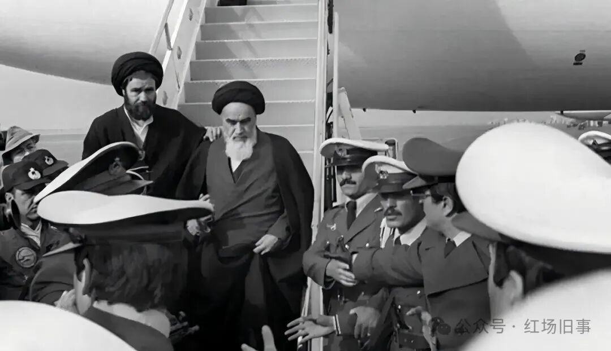
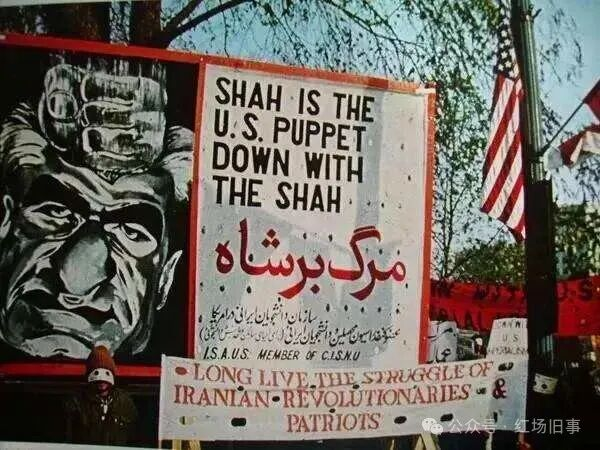
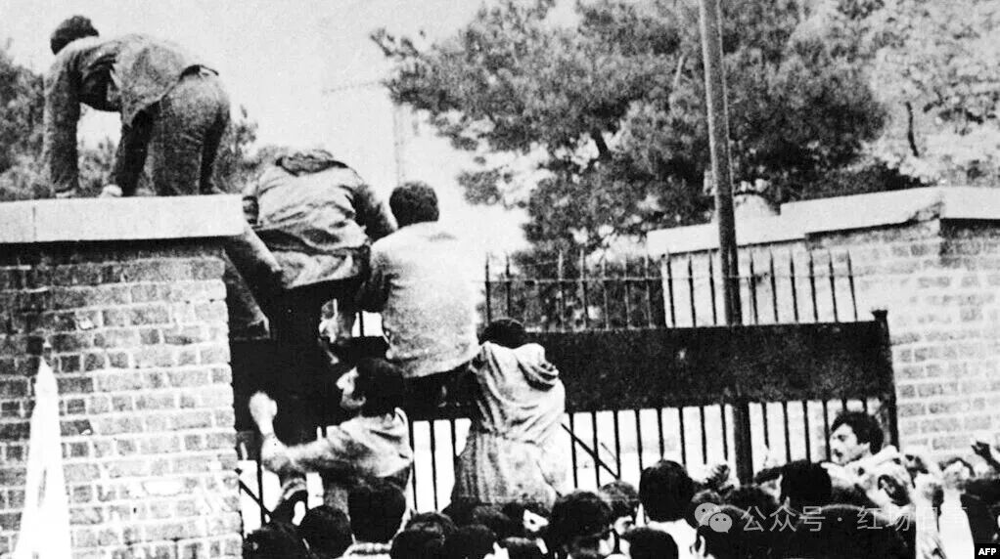
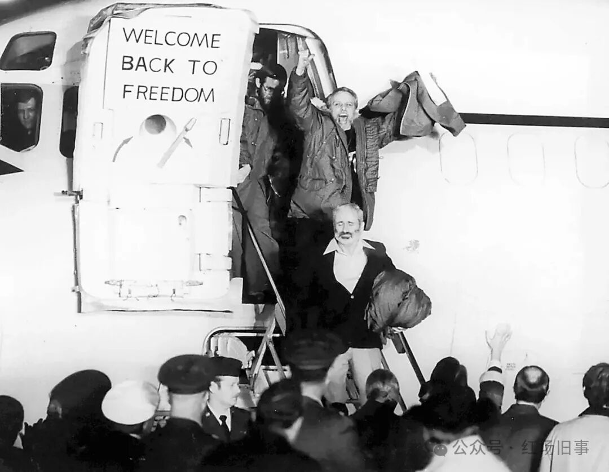

1979年2月1日，德黑兰梅赫拉巴德机场。
数百万伊朗人挤满跑道，高喊着口号迎接一位从巴黎归来的老人——阿亚图拉·鲁霍拉·霍梅尼。他在流亡15年后重返故土。

而在数千里外的华盛顿，美国总统吉米·卡特和他的国家安全团队正盯着电视屏幕，内心涌动着一种隐秘的期待。
他们以为，自己做了一笔精明的交易。
他们不知道的是，这笔交易将成为美国中东战略史上最致命的误判之一。
一、国王的黄昏
时间回拨到一个月前。
1979年1月16日，伊朗国王穆罕默德·巴列维登上皇家飞机，离开了他统治了37年的国家。机场上没有送行的人群，只有冷风和空荡荡的跑道。
巴列维王朝的崩塌并非突如其来。从1978年开始，反国王的抗议浪潮席卷全国。而美国，作为伊朗最大的盟友和武器供应国，站在了一个十字路口。

问题来了：为什么不救？
事实上，美国并非无动于衷。但卡特政府做出了一个惊人的判断：巴列维已经失去民心，继续支持他只会激怒伊朗民众，最终导致美国彻底失去这个战略支点。
于是，他们转向了一个备选方案——霍梅尼。
是的，你没看错。美国政府曾私下支持霍梅尼回国。
二、巴黎的秘密会晤
这个听起来荒谬的决定，背后是美国国务院的一套精妙算计。
1978年下半年到1979年初，时任美国国务卿赛勒斯·万斯通过多个中间渠道，与霍梅尼团队保持了接触。核心逻辑很简单：
• 霍梅尼是反国王力量的核心，支持他能加速政权过渡；
• 霍梅尼是宗教领袖，而非政治人物，美国认为他掌权后不会亲自执政，而是会由世俗派技术官僚治理国家；
• 巴列维倒台不可避免，与其被动观望，不如主动与新势力建立关系。
美国驻伊朗大使威廉·沙利文在发往华盛顿的电报中甚至写道：“霍梅尼将被视为一位甘地式的人物，而非极端主义者。"
你看，这就是问题的根源。
美国情报系统和外交团队严重误读了霍梅尼的政治哲学。他们用世俗民族革命的模板，去套一场宗教革命。
三、归来的风暴
1979年2月1日，霍梅尼踏上伊朗土地的那一刻，所有幻想开始破灭。
他在机场发表的讲话，美国决策者们可能没有认真听：
“我要建立一个伊斯兰政府，一个没有国王、没有独裁者的政府，一个基于伊斯兰教法的政府。"
这句话里藏着三个美国没听懂的信号：
• “没有国王”——不仅推翻巴列维，也废除君主制；
• “没有独裁者”——反对任何形式的世俗独裁；
• “基于伊斯兰教法”——神权高于世俗政权。
但此时，美国还沉浸在“霍梅尼不会亲自执政”的幻觉中。他们相信，这位75岁的宗教老人只会做象征性的领袖。
他们错了，错得很离谱。
四、444天的噩梦
转折点在1979年11月4日。
数百名伊朗学生冲进美国驻德黑兰大使馆，扣押了66名美国人质（后释放14人，剩余52人被扣押444天）。

1979年11月4日，伊朗学生翻越美国驻伊朗大使馆的围墙。
这不是突发事件，而是精心策划的报复。
导火索是10月发生的另一件事：美国允许患病治疗的巴列维进入纽约。这一举动激怒了伊朗革命者，他们认为美国仍在策划复辟。
人质危机彻底改变了美伊关系。卡特政府尝试了军事营救（鹰爪行动惨败）、经济制裁、外交斡旋，全部无效。
讽刺的是，美国曾以为霍梅尼会成为一个可控的过渡领袖，结果他亲手将美国定义为“大撒旦”（Great Satan）。
五、双重背叛
文章开头提到的那幕——以色列驻德黑兰大使馆被移交给巴勒斯坦解放组织——正是这场剧变的缩影。
巴列维时期，伊朗与以色列是秘密盟友。两国在情报、能源、安全领域深度合作。革命后，霍梅尼不仅断绝了与以色列的关系，还将耶路撒冷问题上升为宗教使命：
“以色列是伊斯兰的敌人，必须被消灭。"
为什么这叫“双重背叛”？
对美国而言，他们支持霍梅尼是为了延续影响力，结果彻底失去了伊朗；
对以色列而言，他们最亲密的地区盟友一夜之间变成最凶猛的敌人。
而霍梅尼在1979年喊出的那句口号——“不要东方，不要西方，只要伊斯兰”——美苏两个超级大国才猛然发现：
在这场革命中，他们都是输家。
六、悬疑时刻：情报漏洞究竟在哪里？
现在，让我们停下来思考一个问题：
美国情报系统为何会如此失算？
历史学家们总结出几个关键原因：
• “世俗偏见”：冷战时期的美国分析员习惯用左右翼政治光谱分析革命，无法理解宗教神权的独特驱动力；
• 信息源单一：过度依赖巴列维王室和精英阶层的情报，忽视了底层宗教动员的规模；
• 幸存者偏差：霍梅尼在流亡期间展现的温和形象，让美国误判了他掌权后的极端立场。
最致命的误判是：美国以为宗教革命者会像世俗革命者一样——先夺权，再务实。
但霍梅尼的逻辑是：先确立意识形态纯洁性，再谈一切。
七、尾声：历史的回响
1981年1月20日，里根宣誓就职美国总统。就在就职典礼结束后几分钟，被扣押444天的52名人质全部获释。

1981年1月，美国人质在被关押444天后从伊朗返回。
是巧合吗？
多年来，一直流传着一个阴谋论：“十月惊奇”。据称，里根的竞选团队曾秘密与伊朗接触，承诺如果伊朗在卡特连任前不释放人质，里根上台后将提供更优厚的条件——包括解冻资产、甚至武器交易。参与里根竞选活动的政治人物康纳利，曾在1980年前往中东多国。有说法称，他向中东领导人传递了一个信息：里根一定会赢得大选，会给予伊朗比卡特许诺的更优厚条件，前提只有一个——伊朗不能在大选之前释放人质。美国国会的后续调查没有找到确凿证据。但所有人都知道：里根胜选后，以色列开始秘密向伊朗出售武器——这就是后来震惊世界的“伊朗门事件”。一个更大的悬念浮现了：刚刚高喊“消灭以色列”的霍梅尼，为何在两伊战争爆发后，默许手下接收来自特拉维夫的军火？当伊拉克的坦克逼近德黑兰，那个被称为“小撒旦”的敌人，为何在一夜之间变成了唯一的军火商？下期预告下一集《中东风云：“伊朗门”秘辛——敌人为何变成军火商》，我们揭开两伊战争背后，那场改变中东格局的秘密交易。中东风云｜第二集 从“兄弟”到“死敌”：1979年之前，伊朗和以色列有多铁？中东风云｜第一集 波斯帝国的“犹太人救赎”——2500年前的伏笔
文字与图片版权归各自权利人所有；排版根据抓取内容整理。